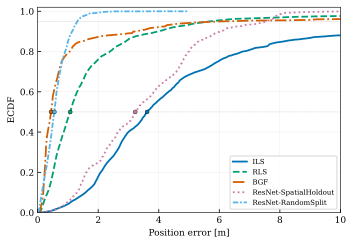

IPIN 2026Accepted · talk on 7 October 2026, Rome
From Least Squares to Deep Learning: Benchmarking Indoor Positioning on the HYMN Multi-Technology Dataset
Question. How do range-based methods from least squares to a learned regressor compare on fused UWB, BLE and WiFi ranges, and does the regressor generalise to reference points it has not seen?
Fused UWB, BLE and WiFi FTM ranges at all 48 points. The paper labels the hall grid as indoor and the 12 driveway points as transition.
- The Bayesian grid filter (BGF) reaches the lowest median error of 0.44 m, but a small fraction of epochs collapse near the grid bounds and stretch its P95 to 6.29 m.
- A ResNet trained on random epoch-level splits sits close on the median (0.55 m) and has the shortest tail (P95 1.31 m).
- Holding reference points out of training raises the ResNet's median to 3.22 m. Its random-split advantage reflects interpolation rather than generalisation to unseen locations.

| Method | Median [m] | P95 [m] |
|---|---|---|
| Iterative least squares (ILS) | 3.62 | 18.66 |
| Robust least squares, Huber (RLS) | 1.07 | 5.68 |
| Bayesian grid filter (BGF) | 0.44 | 6.29 |
| ResNet, random split | 0.55 | 1.31 |
| ResNet, spatial hold-out | 3.22 | 7.57 |